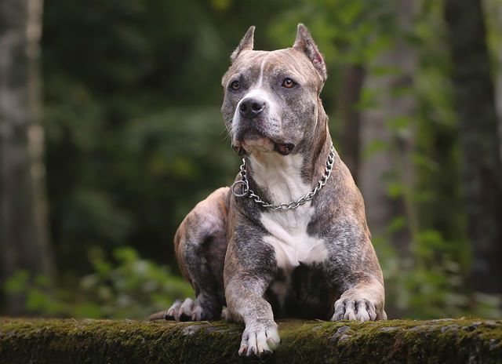
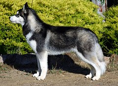
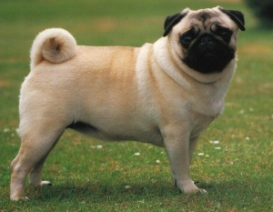
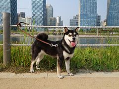

Сильна, потужна шия з добре розвиненою мускулатурою плавно переходить у широкі груди.
Рухи вільні. Довжина корпусу трохи перевищує висоту в холці (45-53 см).
Вага може розрізнятися навіть у собак однакового зросту (16-27 кг).
Шерсть коротка, гладка, щільно прилегла, блискуча. Допустимі будь-які забарвлення - суцільні і з мітками, колір не впливає на робочі якості.
Вуха високо посаджені, можуть бути коротко підрізані.
Хвіст іноді підрізають, проте це не визнається Об'єднаним клубом собаківництва.

Термін «Хаскі» походить від спотвореного «Ескі» — короткої клички, якою називали ескімосів.
Внаслідок ця назва закріпилась за ескімоським хаскі.
Це порода з густою шерстю, гострою формою морди з стоячими вухами і загнутим хвостом у формі серпа.
Коли перші представники чукотських собак прибули в північну Америку, для відмінності від ескімоських
Хаскі їх стали називати сибірськими хаскі, так ця назва зберіглась і по сьогодні.

Мопс — маленький декоративний собака, якого здавна тримала знать.
Собака з живим, веселим і при цьому урівноваженим характером, благородна і віддана господарю.
Недоліками мопсів, що зустрічаються вкрай рідко — є агресивність, боязкість, нервовість. Мопси живуть 13-15 років.

Німецька вівчарка дуже красива. Можна зрозуміти тих, хто захоплюється гармонією будови й надзвичайною красою рухів.
Це і стрункий, і доволі сильний собака. У нього загострена морда з чорною маскою. Вуха стоячі. Гармонійні, плавні лінії корпуса.
Пружна спина, сильні пружні кінцівки.
Колір має бути яскравим — чорно-рудим із чорною маскою на морді та чорною спиною, смугасто-сірим, чорним.
У німецької вівчарки круглі лапи з дуже твердими подушечками.

Шіба-іну — порода мисливських собак, виведена на японському острові Хонсю, найменша з шести порід споконвічно японського походження.
1936 року оголошена національним надбанням Японії, де основне поголів'я цих собак перебуває в селах.
Шіба належить до стародавніх порід. Її предками були собаки, яких використовували для полювання на пернату дичину в заростях із густим підліском,
а також на ведмедя, оленя та кабана. Схрещуючи їх між собою, концентрували та закріпляли бажані мисливські характеристики.